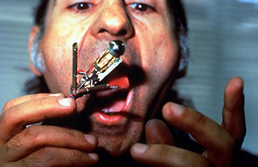

A self-illuminating, sound-emitting sculpture made from biocompatible metals — gold, silver, and stainless steel — designed to be swallowed and operated inside the stomach. Constructed with a jeweller, a micro-surgery instrument maker, and a musician, the piece closed into a capsule for insertion down the oesophagus and was actuated by a servo motor and logic circuit via an external control cable.
Inserted 40cm into the stomach cavity, the sculpture opened, closed, extended, and retracted — flashing light and emitting sound — while filmed with a medical endoscope. It required six insertions over two days to capture fifteen minutes of footage. The performance took place in a private clinic, five minutes from a hospital, in case of accidental puncture.
Not a prosthetic implant but an aesthetic addition. Not medical necessity but contingency. The body becomes hollow — a host not for a self but for a sculpture. Skin, once the boundary between inner and outer, is stretched, pierced, and penetrated by technology until it no longer signifies closure. The self becomes situated beyond the skin, and the body's emptiness comes not from lack but from the excess of its extended capabilities.